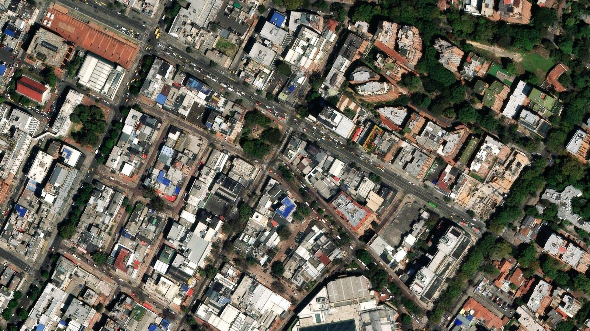
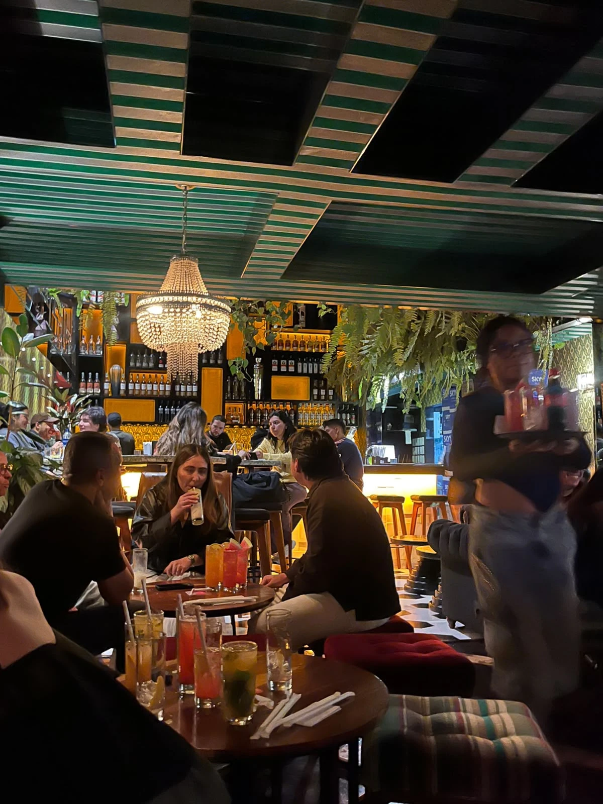
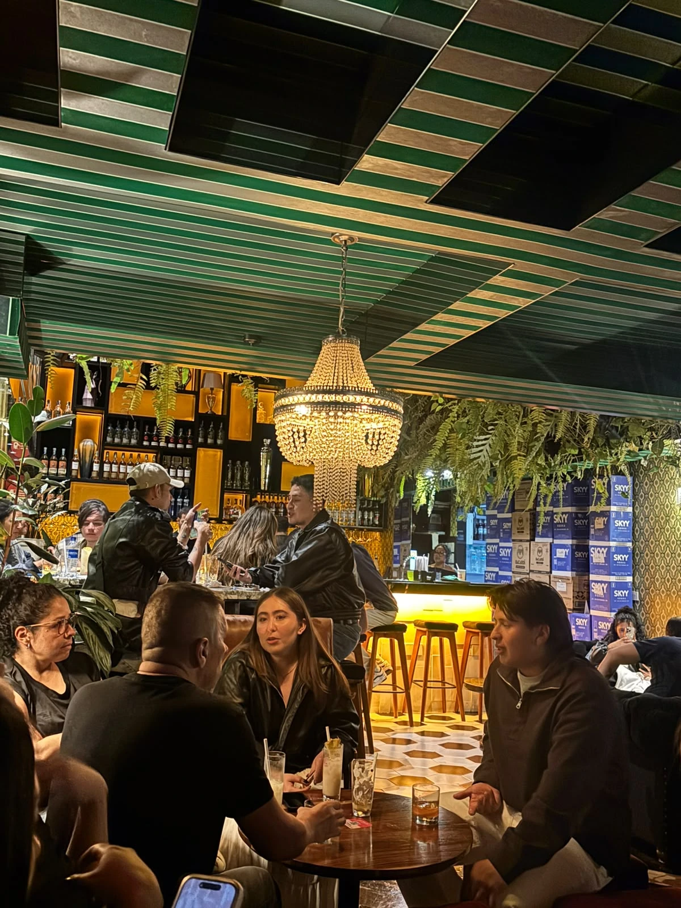

01
Llegamos
8:30 p. m. · Fila corta. Había una mesa disponible para cuatro.

METODOLOGÍA DE OBSERVACIÓN PARA LA IDEACIÓN
Una noche en el gastrobar Yumi Yumi.
Observar el lugar. Seguir una mesa. Registrar lo que sucede.
Juan Martinez · Mariana Silva · William Fonseca
Rudiger Estuart Gonzalez Preciado
01 / EL PUNTO DE PARTIDA
UNA CIUDAD EN EL MUNDO
Cl. 84A #12a-22
Zona T · Bogotá, Colombia

Zona T · Bogotá
LA VISITA / 26 DE SEPTIEMBRE DE 2026
8:30 p. m. · Fila corta. Había una mesa disponible para cuatro.
Primer piso. Desde la mesa reconocimos el ambiente y la barra.
La carta digital abrió con un anuncio de 3×1; ya no aplicaba.
Elegimos cócteles y dos combos de sándwich. Aprovechamos el 2×1.
Reconocimos el entorno y elegimos una mesa de cuatro adultos.
Primero vivimos el lugar; después seguimos las interacciones de una mesa.
La visita terminó a las 10:00 p. m.
EL LUGAR / EXPERIENCIA DEL EQUIPO

Luz tenue, tonos amenos, tapizado de rombos y franjas verde/blanco.
Entrada abierta que parecía zona de fumadores; adentro, luz más baja.
Mesas bajas, sofás para grupos y asientos sin respaldo. Se veía acogedor.
Botellas, lámpara de cristales y hojas en cascada. Cajas junto a la barra.
Escaleras a la derecha. Bebidas abajo; más mesas, cocina y baño arriba.
Vestíbulo compartido y espejos; un baño de hombres y dos de mujeres. Discreto.
LA CARTA / QUÉ OFRECE EL GASTROBAR
La publicidad que apareció.
Su horario ya había terminado.
La promoción disponible.
Un mismo sabor por cada par.
Ron, vodka, tequila,
whisky y ginebra.
Frutas, leche,
coco y chocolate.
Yumilu, Red Lips,
Brisa y más.
Sándwiches · $61.900
Hamburguesas · $63.900
Lectura de la carta recogida en la visita. Los combos de comida son ofertas específicas.
EL MÉTODO / DE LA CLASE AL LUGAR
En clase entrenamos la atención al detalle. Aquí la aplicamos a un lugar real y a una sola mesa.
Definimos qué observar: la interacción de cuatro adultos con sus bebidas, en Yumi Yumi, durante 90 minutos.
Interpretamos cómo cambian las elecciones, la participación, la cercanía y las pausas alrededor de las bebidas.
Conectamos hechos, lecturas y fotos en seis insumos claros sobre la interacción, listos para una ideación posterior.
Deducimos a partir del registro, contrastamos las hipótesis y reunimos insumos para idear después.
Su interacción con las bebidas alcohólicas.
Una mesa del primer piso de Yumi Yumi, Bogotá.
Sábado 26 de septiembre · 8:30–10:00 p. m.
Camiseta negra, manga corta.
Conversa con Valentina; va al baño tres veces.
Gafas, reloj y ropa casual.
Al inicio interviene menos.
Chaqueta oscura y reloj.
Conversa con Carlos.
Buzo tipo polo, pantalón beige.
Asiente y luego participa más.

CarlosPatriciaValentinaAndrésDos mayores y dos jóvenes, con ropa casual. La chaqueta de Valentina parecía costosa; el buzo tipo polo y pantalón beige de Andrés se veían cuidados. Esta apariencia demuestra un nivel socioeconómico medio-alto.
Carlos y Andrés tenían bebidas de whisky. Patricia y Valentina tomaban cócteles de piña colada y bebida de banano en 2×1.
Después, Carlos y Andrés dejaron el whisky y pidieron cócteles en promoción con sus respectivas acompañantes. El 2×1 se volvió a repetir.
Llegaron cócteles de sandía y naranja; después, otros diferentes explorando nuevas bases de licor. Mantuvieron el 2×1.
Al comienzo Andrés asentía mientras Valentina y Carlos hablaban. Conforme avanzaron la reunión y las bebidas, Andrés intervino más en la conversación.
Primero hablaron más Valentina y Carlos. Patricia intervino menos al inicio; después conversó con Valentina y Andrés también aportó. La música permitía escucharse.
Andrés empezó a soltarse más y su personalidad salió a flote, en donde no solo hablaba con la voz, sino con expresión corporal. Movía las manos al hablar y sus gestos se volvieron una parte activa de su comunicación.
Valentina acarició la cara de Andrés. En otro momento salieron juntos al baño y regresaron tomados de la mano. Esta pausa les permitió hablar de cómo se estaban sintiendo en la reunión.
Los hombres fueron al baño por separado. Carlos se levantó tres veces; en la última ocasión se veía mareado y caminaba mareado. Sus tres pausas muestran que no todos llevaban el mismo ritmo en la noche. Luego seguía dentro de la reunión.
¿Será que Valentina es hija de Carlos y Patricia?
¿Será que Andrés es el novio de Valentina y está conociendo a su familia?
¿Será la segunda o tercera salida de Andrés con la familia de Valentina?
¿Será que Valentina y Andrés son de un nivel socioeconómico medio-alto por su ropa y accesorios?
¿Será que Carlos y Andrés eligieron whisky para verse más serios al empezar la reunión?
¿Será que Patricia y Valentina pidieron el 2×1 porque, como posible mamá e hija, les resultaba fácil ponerse de acuerdo?
¿Será que Patricia y Valentina convencieron a Carlos y Andrés de seguir con el 2×1?
¿Será que los cuatro querían probar distintos sabores aprovechando el 2×1?
¿Será que Valentina o Andrés conocían el 2×1 y propusieron llevar a los mayores a Yumi Yumi?
¿Será que compartir las bebidas ayudó a Andrés a perder la timidez y participar más?
¿Será que Valentina y Andrés salieron juntos para hablar de cómo se estaban sintiendo en la reunión?
¿Será que el grupo estaba tomando y comiendo antes de continuar la noche en otro lugar?
Las diferencias de edad ayudan a seguir quién conversa con quién y cómo se forman los pares al pedir. La ropa sirve para reconocerlos y para evidenciar que sus ingresos corresponden a un nivel socioeconómico medio-alto en esta familia.
Al empezar, los hombres eligieron por separado y las mujeres compartieron una promoción. Hubo confianza entre ellas como madre e hija para acordar juntas este primer pedido.
Los pedidos de los hombres se acercaron a lo que ya tomaban las mujeres. Ellas los animaron y convencieron de aprovechar la oferta. El cambio de actitud se hizo evidente en la mesa.
Cambiar de sabor mientras repiten la promoción demuestra que querían probar nuevos sabores juntos, además de beber. La elección de probar cosas distintas fue parte de este momento compartido.
Andrés empezó a sentirse más cómodo con el grupo. Beber juntos ayudó, y también pasó más tiempo conversando. Este cambio le permitió integrarse activamente en la presentación familiar.
La atención no quedó siempre en las mismas personas. Entre pedidos se abrieron otras conversaciones: Patricia participó y Valentina habló tanto con Carlos como con ella. La reunión siguió siendo compartida.
Su personalidad salió a flote, en donde no solo hablaba con la voz, sino con expresión corporal. Sus movimientos y gestos con las manos se volvieron un apoyo para señalar y expresarse con total libertad.
Los gestos reafirman la relación afectiva. Cuando Valentina y Andrés salieron juntos al baño, esto les dio un momento para hablar a solas y comentar cómo se sentían. La cercanía en pareja quedó registrada y fortalecida.
Carlos alternó conversación, consumo y salidas de la mesa. La bebida influyó en sus tres pausas y en que se viera mareado y caminara mareado, mostrando que no todos llevaban el mismo ritmo.
Hombres: whisky.
Mujeres: cócteles 2×1.
Sandía y naranja.
Los hombres se suman al 2×1.
Otros cócteles y conversación.
Nuevos sabores compartidos.
Dos mayores y dos jóvenes pasan a compartir cócteles.
Para idear: Explorar qué facilita disfrutar un mismo plan entre personas de edades distintas.Ellos empiezan con whisky; ellas comparten el 2×1.
Para idear: Explorar cuándo pesa el gusto propio y cuándo se acuerda una bebida con alguien.Los hombres después piden el 2×1 con sus acompañantes.
Para idear: Explorar cómo una recomendación o un acuerdo cambia lo que alguien decide tomar.Cambian sabores y mantienen los pedidos en pares.
Para idear: Explorar la elección de un nuevo sabor como momento para compartir curiosidad.Andrés pasa de asentir a hablar más mientras avanza el encuentro.
Para idear: Explorar cómo beber y conversar juntos ayudan activamente a ganar confianza.Patricia interviene más; Valentina conversa con distintos integrantes.
Para idear: Explorar cómo un encuentro alrededor de las bebidas permite incorporarse a la conversación.Andrés señala con las manos y su expresión corporal empieza a hacer parte de la comunicación.
Para idear: Considerar cómo la expresión corporal acompaña y permite que la personalidad salga a flote al hablar.Caricia, salida juntos y regreso de Valentina y Andrés de la mano.
Para idear: Explorar cómo una salida con bebidas combina cercanía de pareja y convivencia del grupo.Carlos hace tres pausas; al final camina mareado.
Para idear: Considerar el impacto de la bebida en el mareo y ritmo de consumo que varían en cada persona.Compartieron la salida personas de edades distintas. Se observó su parentesco familiar y que corresponden a un nivel socioeconómico medio-alto.
Estar en la misma mesa no significó empezar bebiendo lo mismo. La diferencia inicial ayuda a reconocer cómo se acercaron después sus elecciones.
La elección de bebida pasó a organizarse en pares. La influencia de las mujeres fue determinante para acercar los pedidos en conjunto.
Repitieron la manera de pedir, pero cambiaron lo que tomaban. Esto demuestra una clara curiosidad compartida por probar nuevos sabores durante la reunión.
Andrés ganó presencia en la conversación. Su integración es visible, mostrando cómo logró integrarse a la familia con la ayuda de la bebida.
Patricia tuvo más participación de la que mostraba al comienzo. Valentina conectó con varios integrantes, ayudando a acercar al joven a sus padres.
La confianza incluyó más que conversar. En Andrés, la expresión corporal acompañó el habla y demostró que empezó a soltarse más y a dejar salir su personalidad.
Los jóvenes mantuvieron un vínculo cercano dentro del encuentro. Los gestos propios de una pareja les brindó un espacio a los dos dentro de la reunión familiar.
La misma reunión tuvo ritmos distintos para cada persona. En Carlos fueron más visibles las pausas y un evidente mareo al caminar debido al consumo.
Valentina conversó con ambos y mostró una clara confianza propia de padres e hija.
La caricia, la mano y su mayor participación demuestran cómo poco a poco logró integrarse en esta presentación.
Se observó una confianza que demuestra que ya habían compartido en encuentros anteriores.
Su apariencia cuidada y accesorios evidencian un estrato y estilo de vida de nivel medio-alto.
Eligieron whisky al inicio para mantener una postura más seria y formal al comienzo de la reunión.
Compartieron la promoción al inicio. Esta elección demostró la confianza y facilidad para ponerse de acuerdo entre madre e hija.
Los hombres se sumaron a la oferta gracias a que ellas los animaron a probar los cócteles juntos.
Cambiar de cócteles repetidamente fue la manera perfecta de explorar y probar nuevos sabores en familia.
El aprovechamiento de las ofertas y del lugar demuestra que los jóvenes propusieron el plan.
Compartir las bebidas, junto al avance de la conversación, le permitió a Andrés perder su timidez inicial.
Aprovecharon la ida al baño para hablar a solas en privado sobre cómo se estaban sintiendo con la familia.
Aunque el lugar suele ser un punto de partida, al ser un encuentro familiar y con Carlos mareado, se deduce que la noche terminó allí.
SÍNTESIS / EL ENCUENTRO, SUS CAMBIOS Y LO QUE NOS DEJA
Cómo se vivió el encuentro.
En Yumi Yumi, durante 90 minutos, Carlos (≈52), Patricia (≈48), Valentina (≈28) y Andrés (≈29) compartieron mesa. Andrés se mostraba tímido: escuchaba y asentía mientras Valentina hablaba con Carlos. Patricia participaba menos. Ellos empezaron con bebidas distintas a los cócteles 2×1 de ellas; luego pidieron por pares y cambiaron sabores. Andrés fue ganando confianza: habló más y su personalidad salió a flote al empezar a expresarse activamente con el cuerpo. Valentina le acarició la cara. Él había ido solo al baño; en otra ocasión salió con Valentina y regresaron de la mano. Carlos se levantó tres veces y al final caminaba visiblemente mareado.
Qué pueden significar esos cambios.
La reunión pasó de elecciones separadas a una experiencia más compartida. Los hombres se dejaron animar por sus acompañantes para pedir el 2×1; probar otros sabores les dio nuevas decisiones en común. Andrés dejó de limitarse a escuchar y empezó a ocupar su lugar en la conversación. Compartir bebidas fortaleció esa confianza, junto con el tiempo y el trato. Patricia también encontró momentos para hablar y Valentina conectó con distintos integrantes. La caricia y la salida de Valentina y Andrés juntos evidencian su cercanía: tuvieron un momento a dos para comentar cómo iban sintiéndose. Las pausas de Carlos muestran que no todos llevaban el mismo ritmo y que terminó mareado.
Las escenas que alimentan nuevas ideas.
De esta mesa quedan escenas concretas para volver a mirar: personas de edades distintas compartiendo un plan; hombres y mujeres que empiezan eligiendo distinto; un pedido que se extiende a los acompañantes; sandía, naranja y luego otros sabores; Andrés que pasa de escuchar a participar expresándose con todo el cuerpo; Patricia que entra al diálogo; la caricia y el regreso de la mano de Valentina y Andrés; Carlos que interrumpe su permanencia tres veces y termina mareado. Son insumos para explorar acuerdos al pedir, curiosidad compartida, confianza al conversar, usos sociales de los objetos, afecto dentro del grupo y pausas personales.
Cómo terminó de leerse aquella mesa.
Compartir bebidas acompañó una reunión en la que las personas fueron acercando sus elecciones y mostrando distintas formas de confianza. Andrés ganó presencia; Patricia habló más; Valentina sostuvo conversaciones con los mayores y momentos de afecto con Andrés; Carlos alternó conversación y pausas por su mareo. Esto demuestra la integración exitosa del novio a la familia, las mujeres influyendo activamente en los pedidos conjuntos, y la joven pareja afianzando su vínculo. Queda registrada la manera en que el grupo familiar compartió y disfrutó el encuentro.
OBSERVAR ES EL COMIENZO
Primero, atención.
Después, ideas.
Juan Martinez · Mariana Silva · William Fonseca